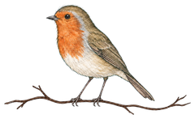

About me

I am Robin James Lewis from Balingen at the foot of the Swabian Alb in southern Germany. After thirteen years in retail and three years running the administration of a cultural centre, I am becoming a certified tax clerk, with my own set of clients in bookkeeping, payroll and annual accounts at a tax firm in Balingen. The final examinations take place in the winter of 2026/27.
Alongside, I digitise the firm's processes: documents and bank transactions reach the books through imports instead of by hand, upstream systems are connected, reports are produced by script. Out of this come tools for everyday work outside the perfect process, in the middle of the transformation – for the days when the bank feed fails and the books still have to be done. First for myself, then for everyone doing the same work. I make these tools available here free of charge, and every Friday I write a short piece on automation and AI in accounting.
Career
- 2007–2016
- Retail: sales assistant, later deputy store manager at a beverage store.
- 2016–2020
- Assistant to the branch management of the same chain: staff budget and rent for up to 56 stores, HR administration, contracts for expansion.
- 2020–2023
- Head of administration of a socio-cultural centre: bookkeeping and payroll, HR, property and third-party funding, commercial management of a €10 million refurbishment, introduction of employee self-service software, crisis management during the pandemic.
- since 2024
- Retraining as a certified tax clerk; since 2025 in practice at a tax firm with my own set of clients. There I moved accounts payable and receivable from manual entry to automated imports and built a controlling system with a weekly KPI report (Python, APIs).
- Qualifications
- Advanced technical college entrance qualification (2007), IHK trainer aptitude examination (2017), preparatory course DATEV Kanzlei-Rechnungswesen, passed with distinction (2023).
What I work with
- DATEV Kanzlei-Rechnungswesen
- DATEV LODAS · Lohn und Gehalt
- DATEV Unternehmen Online
- ADDISON
- Finmatics
- GetMyInvoices
- Lexware Office
- SAP ERP
- Python
- Copilot · Claude
Python for automation and interfaces, plus language models such as Copilot and Claude – under one fixed rule: the models prepare, I decide. I work in German and English.
Voluntary work
Lay judge at the Administrative Court of Sigmaringen. I helped set up two cultural associations as founding treasurer, and I support associations with statutes, charitable status, bookkeeping and funding applications.

Why a robin
In the year I was born, a pair of robins nested at my parents' house and the chicks hatched – that is how I got my name. In Welsh a robin is a robin goch; my father is from Wales. That is why a robin sits on the home page, and why my assistant there is called Goch.